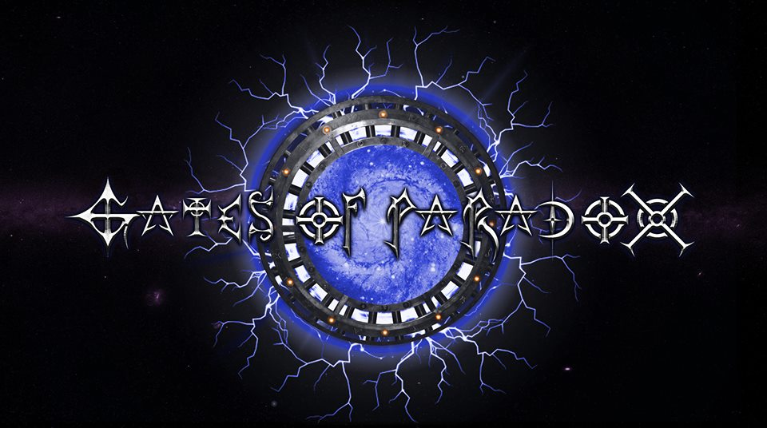

Members
Contact
Upcoming Shows
4/20 - Montage Music Hall
5/12 - Montage Music Hall
5/30 - The World
Cool Stuff
Gates of Paradox took the stage with Elm Street and Udo from the world known band ACCEPT
Other Jazz